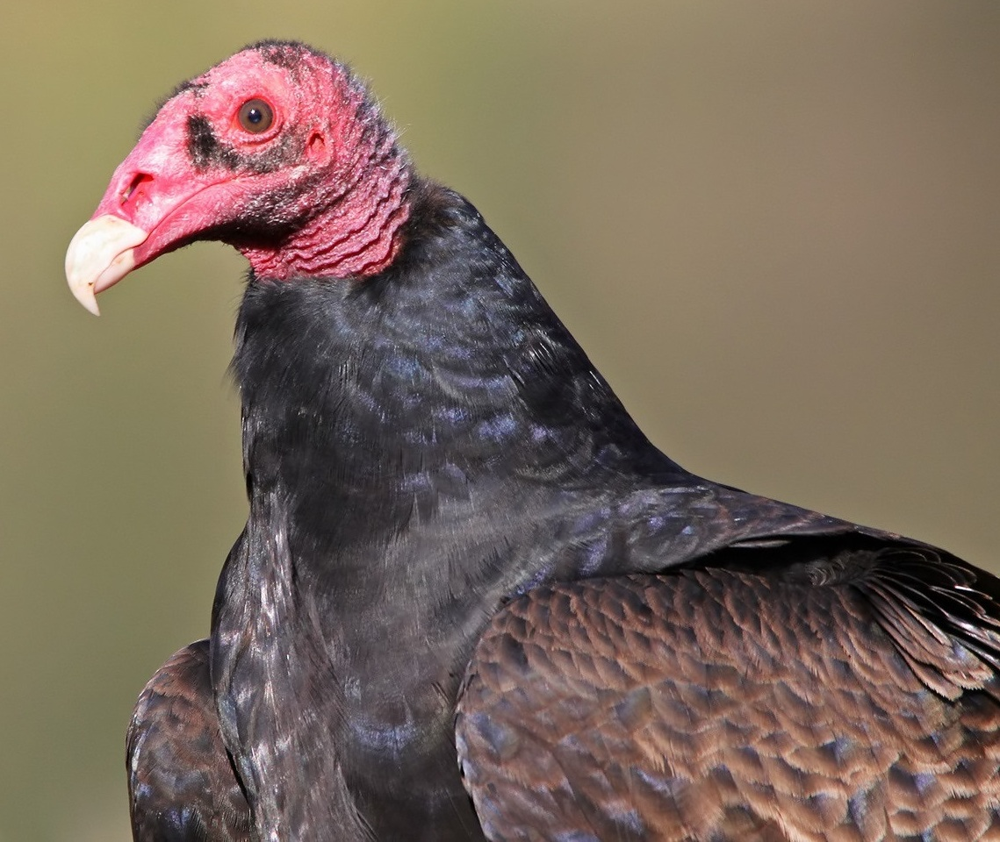
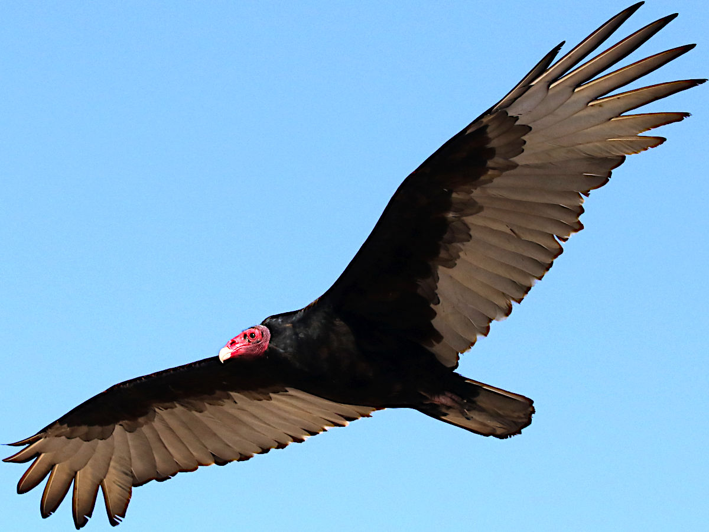
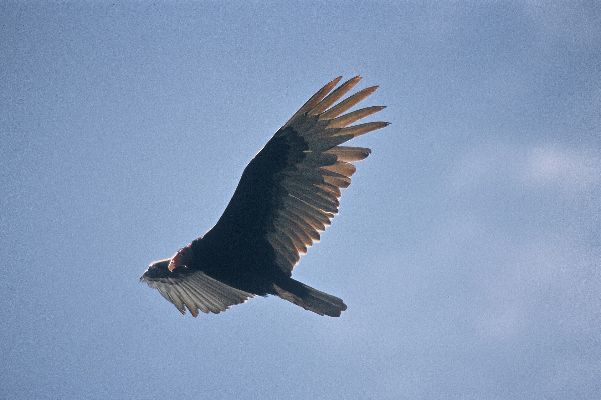
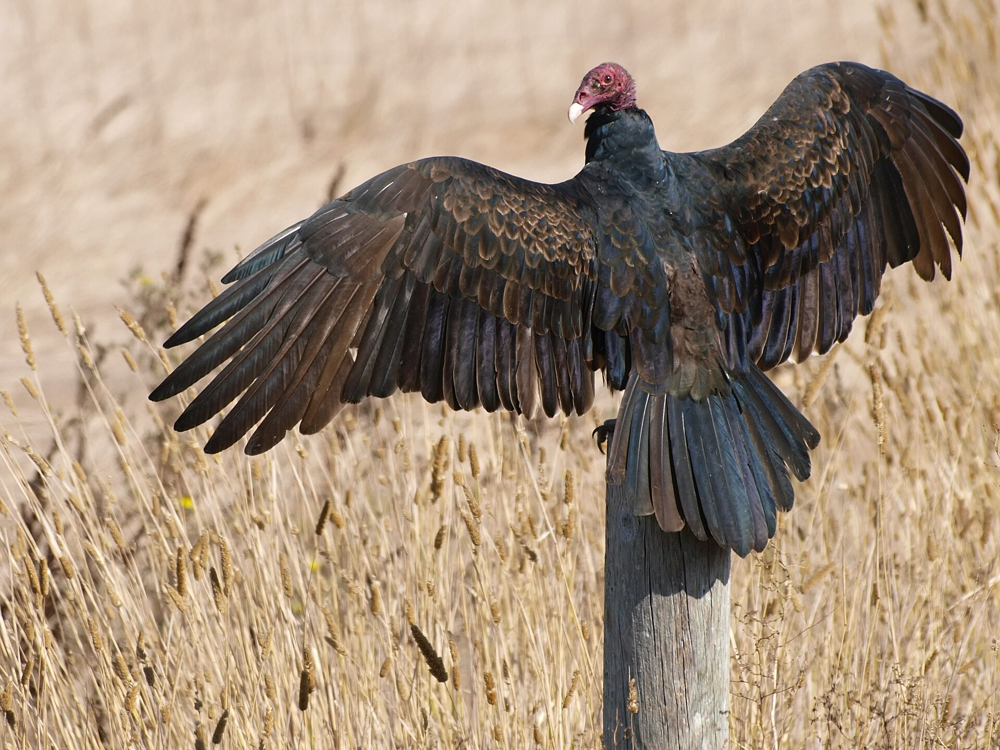
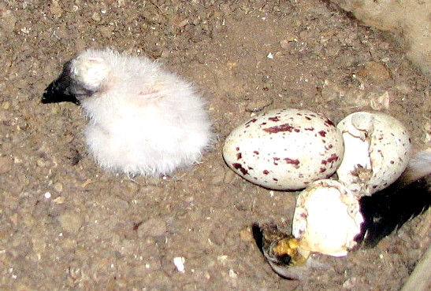
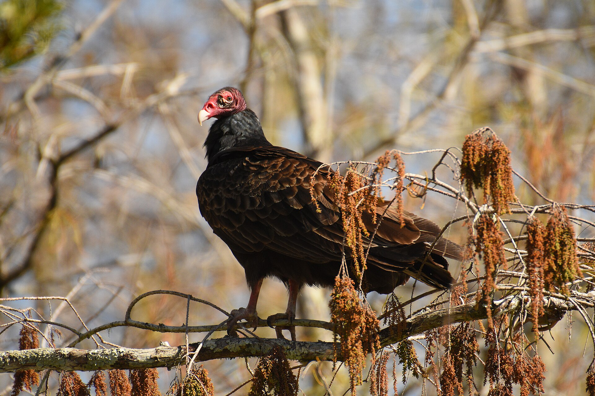
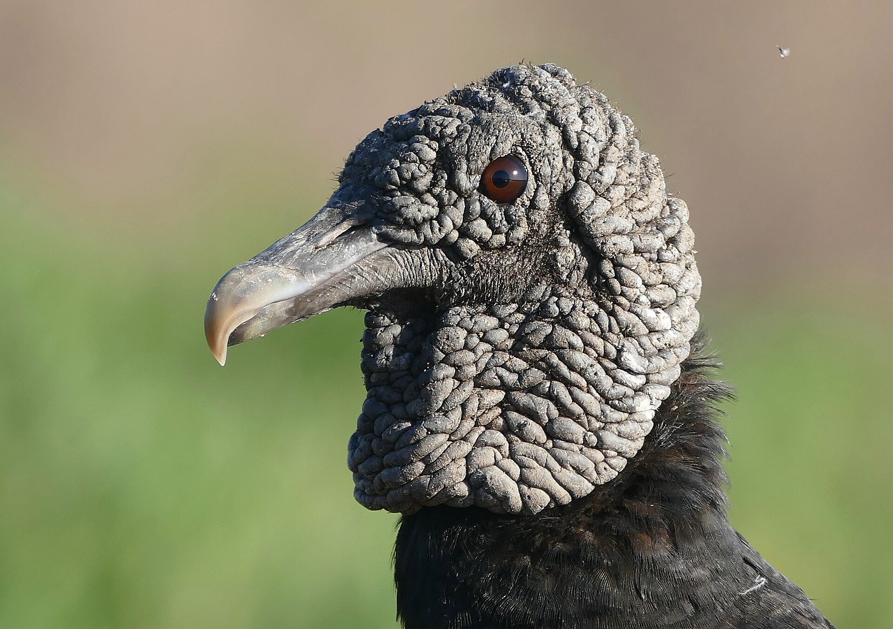
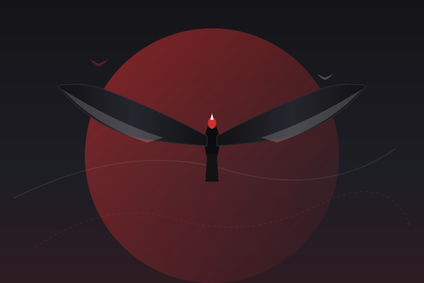
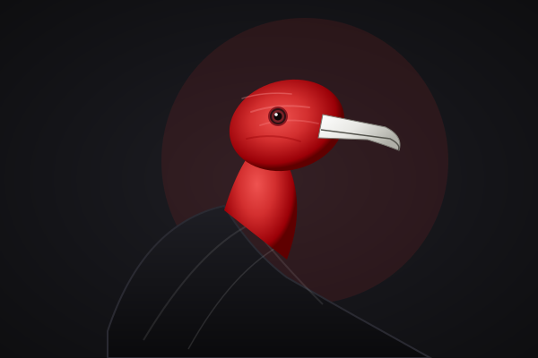
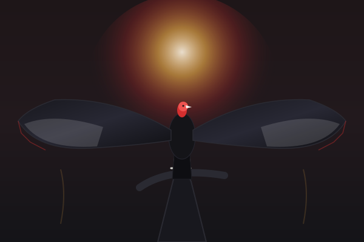

CaracterísticaCabeza Desnuda e Higiene
La piel roja al descubierto evita la acumulación de bacterias y residuos al alimentarse dentro de carroña, además de facilitar la termorregulación corporal.
Descubre el valor ecológico, la anatomía fascinante y el majestuoso vuelo del rey incomprendido del aire.
Evolución y características biológicas que convierten al Aura Tiñosa (Cathartes aura) en el limpiador natural por excelencia.

CaracterísticaLa piel roja al descubierto evita la acumulación de bacterias y residuos al alimentarse dentro de carroña, además de facilitar la termorregulación corporal.

SensorialSu bulbo olfatorio hipertrofiado le permite detectar etanotiol (gas derivado de la descomposición) a grandes distancias y por encima del dosel arbóreo.

MovimientoLa postura característica de sus alas elevadas en diedro positivo mientras se tambalea suavemente, aprovechando corrientes térmicas ascendentes sin necesidad de aletear constantemente.

DefensaUso de la urohidrosis para enfriar y desinfectar sus patas con ácido úrico, así como la expulsión de vómito altamente ácido para repeler posibles depredadores.
El Aura Tiñosa no construye nidos elaborados con ramas, sino que deposita sus huevos directamente en cavidades de árboles, grietas rocosas o en el suelo resguardado. Los huevos presentan pigmentación crema con manchas pardo-rojizas y un cascarón de alta calidad resistente.

Dos reyes del aire con estrategias totalmente opuestas pero complementarias en el ecosistema.
Rastreador silencioso de gran envergadura y planeo térmico continuo

Rastreador biológico capaz de oler etanotiol a gran altura.
Roja, desnuda y lisa.
Vigía visual de complexión compacta y dominio grupal agresivo

Carece de superolfato; depende 100% de la vista.
Negruzca y rugosa.
Desde Canadá hasta la Patagonia, con presencia histórica y destacada en el Caribe.
Bosques, desiertos, zonas costeras y áreas abiertas.
Adaptación para sobrevolar montañas y valles aprovechando el calor del suelo.
Registros e historia en Cuba y Puerto Rico (introducción histórica en el siglo XIX).
El Aura Tiñosa es un componente clave del equilibrio de los ecosistemas, actuando como uno de los principales depuradores naturales de la superficie terrestre.
Al eliminar de forma masiva carroña y cadáveres, estos grandes cuerpos de aves previenen la proliferación de patógenos y reducen el riesgo de brotes epidemiológicos que pudieran afectar a otras especies, incluida la humana. Su presencia es un indicador de un ecosistema sano y funcional, donde la materia orgánica se recicla de manera eficiente.
Gracias a su sensibilidad olfativa, el zopilote detecta la presencia de restos animales en suelo en descomposición, lo que acelera el proceso de descomposición y devuelve nutrientes al suelo. Esta actividad envuelve y enriquece la tierra, fomentando el crecimiento de plantas y la estabilidad de los suelos.
"El guardian silencioso que alimienta al mundo sin pedir reconocimiento."
El puente entre la veneración ancestral y los descubrimientos genómicos modernos.
En la regla de Osha-Ifá, la Aura Tiñosa es una figura sagrada asociada al espíritu B directional, guía de caminos y protector de los viajeros. Sus vuelos sostenidos simbolizan la conexión entre lo visible y lo oculto; su labor de limpieza representa la purificación de lo tóxico y lo persiguido.
Tradición LucumíLa secuenciación del genoma completo de la Aura Tiñosa (GigaDB Dataset) reveló una resistencia inmunológica única frente a toxinas botulínicas y bacterias patógenas. Estudios sobre la cáscara de sus huevos (Journal of Caribbean Ornithology) muestran un grueso y pigmentado pre-plaguicidas, clave para la supervivencia en entornos costeros.
Genómica ModernaLa especie enfrenta la contaminación química y la presencia de residuos de diclofenaco; además, sufre colisiones aéreas, contactos con tendidos eléctricos y prejuicios estéticos infundados que dificultan su protección efectiva.
Conservación"No juzgamos al cirujano por usar guantes ni al Aura por carecer de plumas en su cabeza; ambas son herramientas de absoluta pureza."
Explora la majestuosidad de su vuelo, escucha sus vocalizaciones y únete al registro de observación.
A diferencia de otras rapaces, el Aura Tiñosa no posee siringe vocal. Su única emisión sonora son siseos y gruñidos de advertencia.
Duración aproximada: 0:04 · Muestra educativa de libre uso · Ver créditos del audio

Planeo con alas en diedro en V, aprovechando las corrientes ascendentes sin batir alas.

Piel carmesí desnuda que inhibe la adhesión bacteriana y regula la temperatura corporal.

Postura en horquilla con alas extendidas de 180 cm para secar el plumaje y calentarse.
Contribuye al monitoreo de poblaciones reportando tus observaciones de campo o conectando con plataformas globales.
Sincroniza tus registros ornitológicos con las bases de datos de biodiversidad más reconocidas: